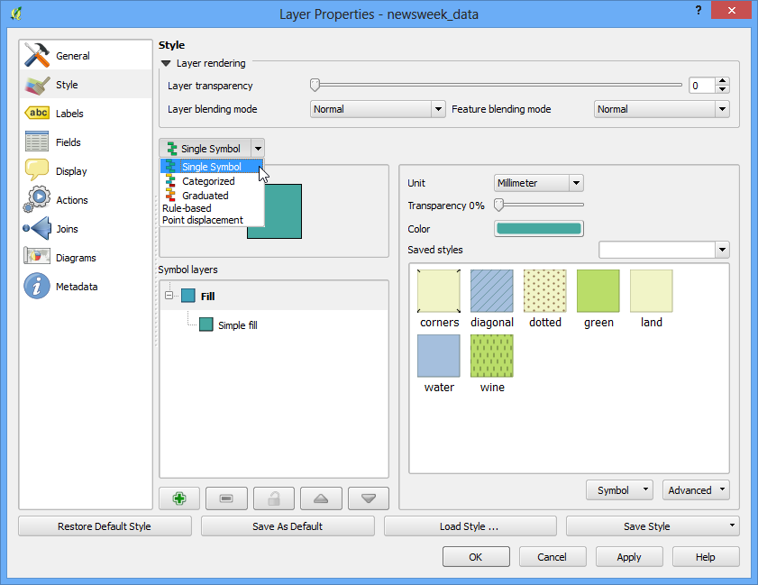
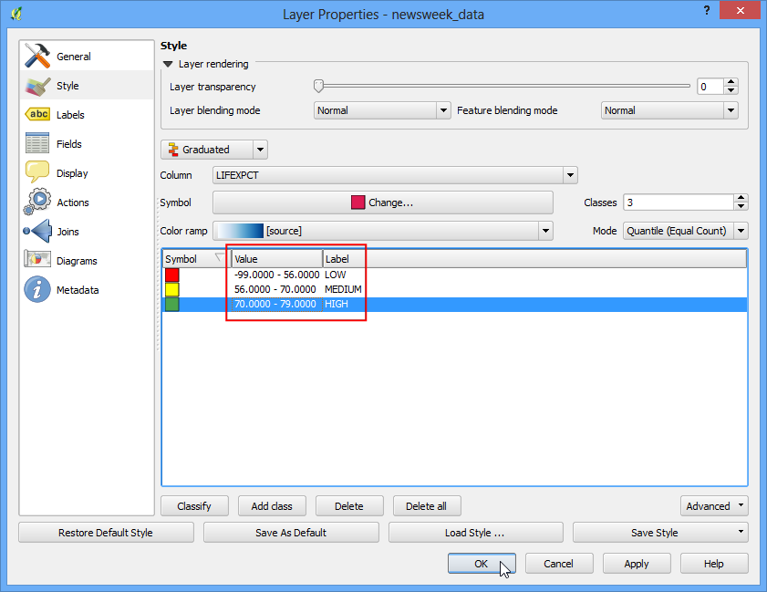

기본 벡터 스타일링
[ Download PDF
A4
Letter ]
지도를 만들기 위해서는 GIS 데이터에 대해 형식을 갖추고 시각적 정보의 형태로 보여주어야 합니다. QGIS에는 원 데이터를 다양한 형태의 심볼로 바꿀 수 있는 많은 옵션이 포함되어 있습니다. 여기서는 기초적인 스타일링에 대해 알아볼 것입니다.
과업 개요
여기서는 세계 여러나라의 기대 수명을 보여주는 벡터 레이어의 스타일을 만들어 볼 것입니다.
과정
QGiS를 시작하고 .를 클릭하십시오.

다운로드한 ``lifeexpectancy.zip``파일을 찾아내어 :guilabel:`Open`을 클릭합니다. ``newsweek_data.shp``를 선택하고 :guilabel:`Open`을 클릭합니다. 다음으로 좌표계를 선택하게 될 것입니다. 좌표계(CRS, Coordinate Reference System)로 `WGS84 EPSG:4326`를 선택하십시오.

압축파일인 zip파일을 포함하고 있는 쉐입파일이 로딩됩니다. 그리고 파일에 적용된 기본적인 스타일을 볼 수 있습니다.

레이어 이름에서 마우스 오른쪽 버튼을 클릭하고 :guilabel:`Open Attribute Table`를 선택하십시오.

다른 속성을 살펴보십시오. 레이어의 모양을 만들기 위해서는 만들려고 하는 지도를 나타내는 속성 attribute 혹은 `컬럼 column`을 반드시 선택해야 합니다. 기대수명 즉, 한 나라에 사는 어떤 사람이 살 수 있는 평균연령을 표현하는 레이어를 만들어야 하므로 :guilabel:`LIFEXPCT`필드의 속성이 스타일을 만드는데 사용되어야 합니다.

속성테이블을 닫습니다. 다시 레이어에서 마우스 오른쪽을 클릭하여 속성 즉, :guilabel:`Properties`를 선택합니다.

속성 다이알로그의 Style`탭에는 다양한 스타일 옵션이 있습니다. 스타일 다이알로그에서 드롭다운 버튼을 클릭하면 다섯개의 옵션 즉, 단일심볼 :guilabel:`Single Symbol, 분류된 Categorized, 단계로 나누어진 Graduated, 규칙에 따른 Rule Based and 점이동:guilabel:`Point displacement`가 사용가능함을 알게됩니다. 여기서는 처음 세개의 옵션에 대해 살펴볼 것입니다.

단일심볼 Single Symbol`를 선택하십시오. 이 옵션은 레이어에서 모든 피처에 대해 한가지 스타일이 적용될 수 있도록 합니다. 여기서는 폴리곤 데이터셋이므로 두가지 기본 선택을 할 수 있습니다. 폴리곤을 채우는 `fill 혹은 윤곽 `outline`만을 스타일링 할 수 있습니다. 점 패턴 채우기 :guilabel:`dotted`로 폴리곤을 채우고 :guilabel:`OK`를 클릭합니다.

선택한 채우기 패턴으로 레이어가 표현된 새로운 스타일을 보게될 것입니다.

단일심볼로는 만들려고 했던 지도가 기대수명을 나타내기에 유용하지 않음을 알게 됩니다. 다른 스타일 옵션을 살펴보도록 하겠습니다. 다시 마우스 오른쪽 버튼을 클릭하고 속성:guilabel:Properties`을 선택하십시오. 이번에는 :guilabel:`Style`탭에서 분류된 :guilabel:`Categorized 옵션을 선택합니다. ‘분류된’이란 레이어에서 피처가 속성필드에서 단일 값에 근거하여 다른 색조를 보이는 것입니다. Column`으로 :guilabel:`LIFEXPCT 값을 선택하십시오. 색상표 :guilabel:`color ramp`에서 알맞은 선택을 한 후 분류 :guilabel:`Classify`버튼을 클릭합니다. :guilabel:`OK`를 클릭합니다.

파란색 색조로 나라를 다르게 표현한 것을 볼 수 있습니다. 밝은 색조는 낮은 기대수명을 짙은 색조는 높은 기대수명을 의미합니다. 데이터의 이런 표현은 매우 유용하고, 개발도상국가와 선진국간의 기대수명을 명확하게 보여줍니다. 이러한 것이 만들려고 생각했던 스타일일 것입니다.

이제 Style 다이알로그에서 단게로 나누어진 Graduated 타입에 대해 알아봅시다. 단계로 나누어진 심볼타입은 단일 계급 *classes*의 단일 컬럼에서 데이터를 분리하여 각 계급마다 다른 스타일을 적용할 수 있습니다. 기대수명을 분리하여 3개의 계급으로 나눈다고 생각해 봅시다. 즉, LOW, MEDIUM 그리고 HIGH. 컬럼 Column`으로써 :guilabel:`LIFEXPCT`를 선택하고 계급분류값으로 :guilabel:`3`을 선택합니다. 거기에는 많은 모드:guilabel:`Mode`옵션이 사용가능할을 알 수 있습니다. 이러한 각각의 모드에 대해서는 알아봅시다. 5개의 모드가 사용가능합니다. 등간격 :guilabel:`Equal Interval, 분위수 Quantile, 내츄럴 브레이크 Natural Breaks (Jenks), 표준편차 Standard Deviation 그리고 프리티 브레이크 Pretty Breaks. 이러한 모드는 데이터를 분리하여 개별 계급으로 만드는데 각기 다른 통계알고리즘을 사용합니다.
등간격 - 이름 그대로 이 방법은 같은 크기의 계급을 만듭니다 만약 데이터가 0-100 범위라면 그래서 10개의 계급으로 나눈다면, 이 방법은 0-10, 10-20, 20-30 등과 같이 각 계급이 10 간격의 같은 크기로 만들 것입니다.
분위수 - 이 방법은 각 계급의 값의 갯수가 같도록 계급을 결정할 것입니다. 만약 100개의 값이 있다면 그래서 4개의 계급을 원한다면 분위수 방법은 각 계급이 25개 값을 갖도록 계급을 결정할 것입니다.
내츄럴 브레이크 (Jenks) - 이 알고리즘은 계급을 만들기 위해 데이터를 자연적으로 묶어냅니다. 분리된 계급은 각 계급간의 최대 분산과 각 계급내의 최소분산의 결과물입니다.
표준 편자 - 이 방법은 데이터의 평균을 계산합니다. 그리고 평균값으로부터 표준편차에 근거하여 계급을 만듭니다.
프리티 브레이크 - 이 방법은 통계 패키지 R의 프리피 알고리즘을 근거로 합니다. 이것은 조금 복잡합니다만 귀여운 즉, ‘pretty’가 정수를 경계로 계급을 만든다는 의미입니다.
단순하게 분위수를 사용해보도록 합시다. 밑에서 :guilabel:`Classify`를 클릭하면 3개의 계급이 값과 일치하여 나타납니다. :guilabel:`OK`를 클릭합니다.
주석
단계로 나누어진 :guilabel:`Graduated`스타일에 사용되는 속성은 반드시 숫자여야 합니다. 실수나 정수값 다 좋습니다. 그러나 속성이 스트링이면 이 스타일링 옵션을 사용할 수 없습니다.

각 나라별로 평균적인 기대수명을 3가지 색으로 표현한 지도가 나타납니다.

이제 레이어에서 마우스 오른쪽 단추를 클릭하여 Properties`을 선택하고 :guilabel:`Style 다이알로그로 돌아가 보십시오. 몇가지 더 사용가능한 스타일링 옵션이 있습니다. 각 계급의 심볼을 클릭하면 다른 스타일을 선탁할 수 있습니다. 기대수명의 고, 중, 저를 나타내기 위해 빨강, 노랑 그리고 초록의 채움색을 선택합니다.

심볼 선택 Symbol Selector 다이알로그에서 :guilabel:`Color`를 클릭합니다.

색상 선택 Select Color 다이알로그에서 색을 클릭합니다.

레이어 속성 Layer Properties 으로 돌아가서 각 값의 옆에 있는 라벨 Label 을 더블클릭하고 표현하고자 하는 텍스트를 입력할 수 있습니다. 마찬가지로 선택된 범위를 편집하기 위해 값 Value 을 더블클릭 할 수 있습니다. 일단 계급에 만족하면 :guilabel:`OK`를 클릭합니다.

이 스타일은 앞서 두번의 시도에서 보다 더 유용한 지도를 만들어 냅니다 기대수명 값을 설명하고 표현함에 있어 명확하게 표시된 계급명과 색상이 있습니다.